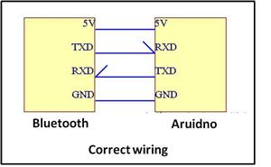

Desenvolva aplicações Android que se conectam à dispositivos baseados em Arduino
A conexão dos pinos RX,TX, Vcc e GND devem seguir o esquema:
Após esta etapa já é possível enviar e receber dados de um dispositivo android.
A transferência de dados deve ser tratada como uma comunicação Serial, exemplo:
void setup(){
Serial.begin(9600);
Serial.write("Hello Android");
}
void loop(){
if(Serial.available()>0){
char c = Serial.read();
}
}
Com os fios conectados corretamente há a possibilidade de altera as configurações do módulo bluetooth. O componente que configuramos foi um JY-MCU, portanto não é garantido que a tabela abaixo funcione para outros modelos.
Command
|
Description
|
Options
|
Response
|
|---|---|---|---|
AT+VERSION
|
Returns the software version of the module
|
OKlinvorV1.x
| |
AT+BAUDx
|
Sets the baud rate of the module
The command AT+BAUD8 sets the baud rate to 115200 |
1 >> 1200
2 >> 2400 3 >> 4800 4 >> 9600 (Default) 5 >> 19200 6 >> 38400 7 >> 57600 8 >> 115200 9 >> 230400 |
OK115200
|
AT+NAMEOpenPilot
|
Sets the name of the module
|
Any name can be specified up to 20 characters
|
OKsetname
|
AT+PINxxxx
|
Sets the pairing password of the device
|
Any 4 digit number can be used, the default
pincode is 1234 |
OKsetPIN
|
AT+PN
|
Sets the parity of the module
|
AT+PN >> No parity check
|
OK None
|
Um bom método de testar se a conexão está funcionando perfeitamente é conectar o arduino tanto a um aparelho android (via bluetooth), quanto via USB a um computador.
Utilizando a biblioteca SoftwareSerial é possível simular uma porta serial utilizando dois pinos digitais pwm.
O exemplo básico do uso de SoftwareSerial pode ser usado para tal finalidade, conectando o pino TX do módulo bt ao pino 10 do arduino, e o pino RX do módulo ao 11 do microcontrolador. Desta forma todos os dados que o arduino receber via bluetooth serão ecoados no serialmonitor.